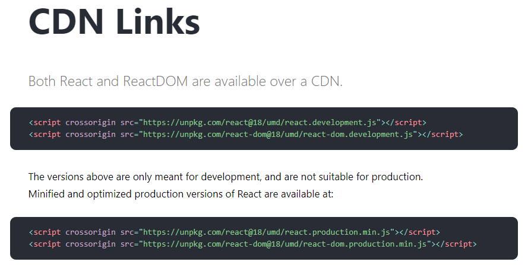
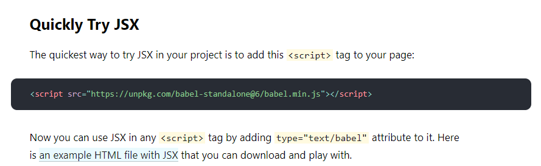
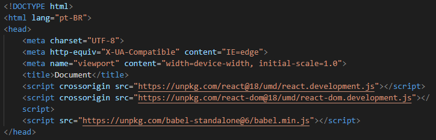

Iremos aprender a utilizar o react! Passaremos a entender o porquê de usarmos o react, aprenderemos sobre JSX e também custom components e CSS com React.
Existem duas maneiras de configurar o react no seu projeto, iremos fazer as duas. Acessando essa página, ela nos mostrará como adicionar o react ao nosso código.
E além disso, adicionaremos também o babel
Após pegarmos os scripts, adicionamos eles à nsosa tag head:
Agora, estando tudo pronto, iremos escrever nosso primeiro código abaixo:
Nesse código usamos ReactDOM.render( <h1> Olá a todos!</h1>, document.getElementById("root")) para alterar a <div> criada acima.
O ReactDOM é como se fosse um DOM do React, e o método render nos permite colocar alguma coisa dentro do nosso HTML. É como se fosse um .appendChild ou .append. Também usamos o document.getElementById() como seletor, mas funcionaria também um docuemnt.querySelector() normalmente.